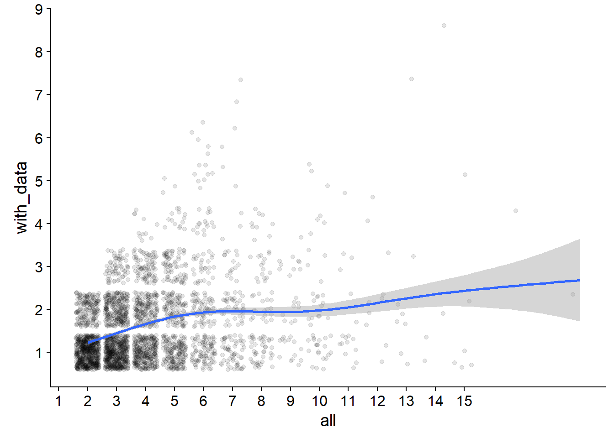
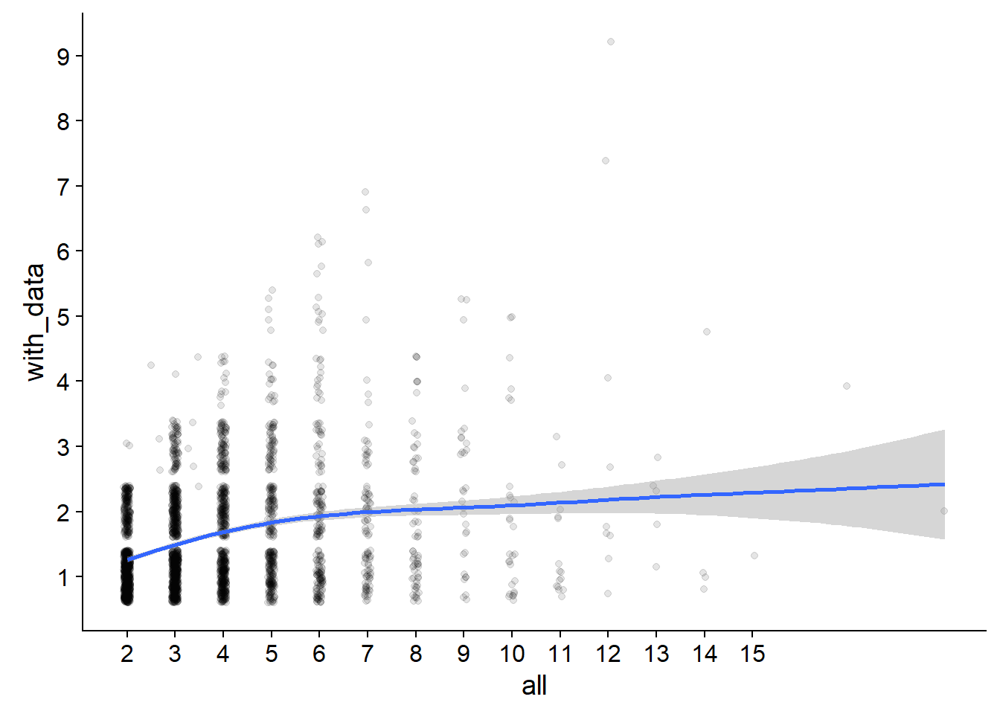
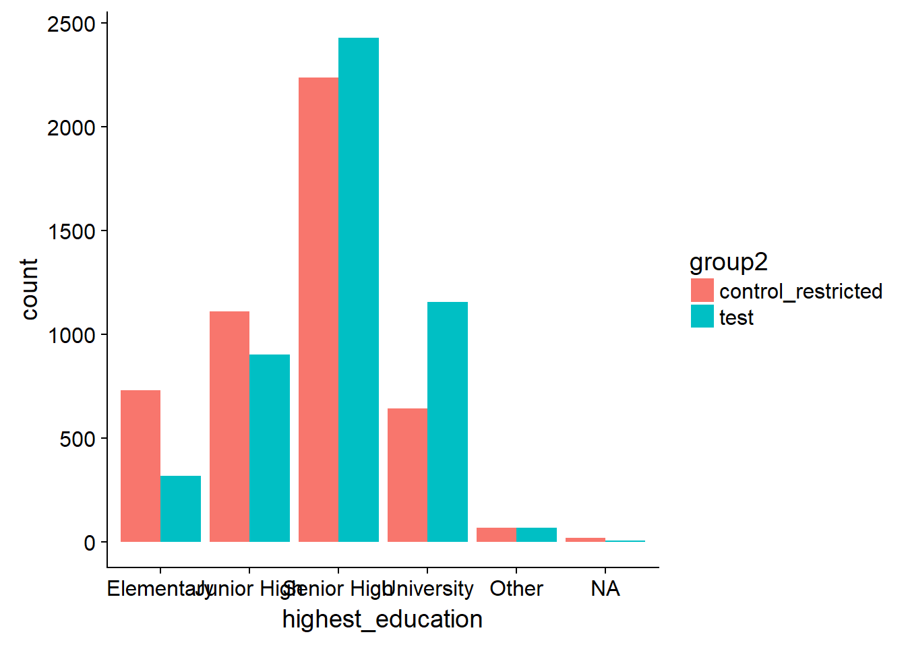
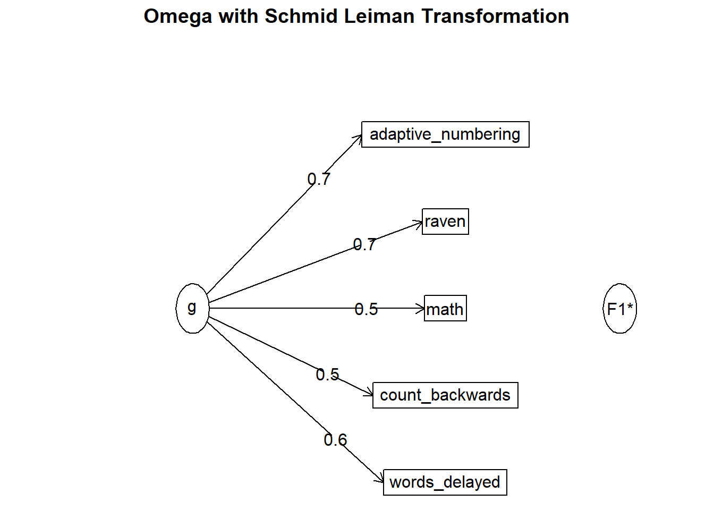
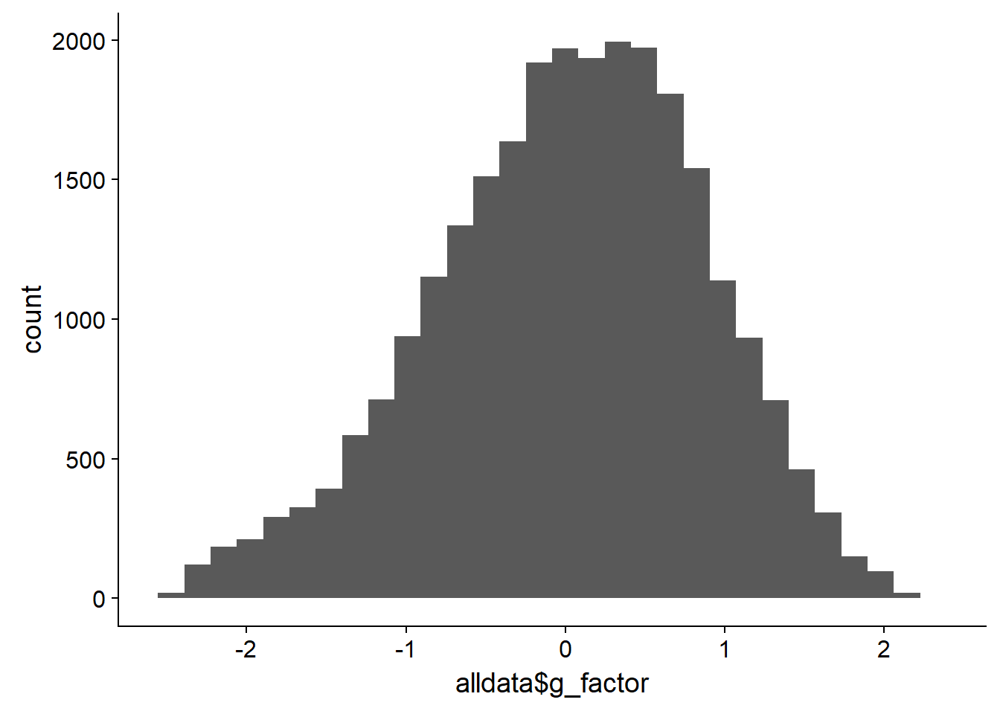

Sample Analyses
Helper
source("0_helpers.R")
##
## Attaching package: 'formr'
## The following object is masked from 'package:rmarkdown':
##
## word_document
##
## Attaching package: 'lubridate'
## The following object is masked from 'package:base':
##
## date
## Loading required package: carData
## lattice theme set by effectsTheme()
## See ?effectsTheme for details.
##
## Attaching package: 'data.table'
## The following objects are masked from 'package:lubridate':
##
## hour, isoweek, mday, minute, month, quarter, second, wday, week, yday, year
## The following objects are masked from 'package:formr':
##
## first, last
## Loading required package: Matrix
##
## Attaching package: 'lmerTest'
## The following object is masked from 'package:lme4':
##
## lmer
## The following object is masked from 'package:stats':
##
## step
##
## Attaching package: 'cowplot'
## The following object is masked from 'package:ggplot2':
##
## ggsave
##
## Attaching package: 'psych'
## The following objects are masked from 'package:ggplot2':
##
## %+%, alpha
## This is lavaan 0.5-23.1097
## lavaan is BETA software! Please report any bugs.
##
## Attaching package: 'lavaan'
## The following object is masked from 'package:psych':
##
## cor2cov
## Loading required package: lattice
## Loading required package: survival
## Loading required package: Formula
##
## Attaching package: 'Hmisc'
## The following object is masked from 'package:psych':
##
## describe
## The following objects are masked from 'package:base':
##
## format.pval, round.POSIXt, trunc.POSIXt, units
##
## Attaching package: 'tidyr'
## The following object is masked from 'package:Matrix':
##
## expand
##
## Attaching package: 'dplyr'
## The following objects are masked from 'package:Hmisc':
##
## combine, src, summarize
## The following objects are masked from 'package:data.table':
##
## between, first, last
## The following objects are masked from 'package:lubridate':
##
## intersect, setdiff, union
## The following objects are masked from 'package:formr':
##
## first, last
## The following objects are masked from 'package:stats':
##
## filter, lag
## The following objects are masked from 'package:base':
##
## intersect, setdiff, setequal, union
Load data
### Import all data with known birthorder
birthorder = readRDS("data/birthorder.rds")
### Import all data
alldata = readRDS("data/alldata.rds")
### Import all pregnancy data
pregnancy = readRDS("data/pregnancy.rds")
Data wrangling
## we have to exclude people in the control group who are part of the birthorder group
individuals = birthorder$pidlink
mother_birthdate_unique_ind = birthorder$mother_birthdate_unique
alldata = alldata %>%
filter(!pidlink %in% individuals) %>%
mutate(check = ifelse(!is.na(g_factor), 1,
ifelse(!is.na(riskA), 1,
ifelse(!is.na(riskB), 1,
ifelse(!is.na(big5_ext), 1, 0)))),
group = "control",
sex.x = (ifelse(is.na(sex.x), sex.y, sex.x)),
male = factor(sex.x == 1),
male = ifelse(sex.x > 3, NA, male),
age = ifelse(age>112, NA, age)) %>%
filter(check == 1)
pregnancy = pregnancy %>%
filter(!mother_birthdate_unique %in% mother_birthdate_unique_ind) %>%
mutate(group = "control",
male = factor(gender == 1),
male = ifelse(gender > 3, NA, male)) %>%
group_by(mother_pidlink) %>%
mutate(number_siblings = n()) %>%
ungroup
birthorder = birthorder %>%
mutate(male = factor(gender == 1),
male = (ifelse(gender > 3, NA, male))) %>%
group_by(mother_pidlink) %>%
mutate(number_siblings = n()) %>%
ungroup
df_pregnancy = bind_rows(pregnancy, birthorder)
## Warning in bind_rows_(x, .id): Vectorizing 'labelled' elements may not preserve their attributes
## Warning in bind_rows_(x, .id): Vectorizing 'labelled' elements may not preserve their attributes
## Warning in bind_rows_(x, .id): Vectorizing 'labelled' elements may not preserve their attributes
## Warning in bind_rows_(x, .id): Vectorizing 'labelled' elements may not preserve their attributes
## Warning in bind_rows_(x, .id): Vectorizing 'labelled' elements may not preserve their attributes
## Warning in bind_rows_(x, .id): Vectorizing 'labelled' elements may not preserve their attributes
## Warning in bind_rows_(x, .id): Vectorizing 'labelled' elements may not preserve their attributes
## Warning in bind_rows_(x, .id): Vectorizing 'labelled' elements may not preserve their attributes
## Warning in bind_rows_(x, .id): Vectorizing 'labelled' elements may not preserve their attributes
## Warning in bind_rows_(x, .id): Vectorizing 'labelled' elements may not preserve their attributes
## Warning in bind_rows_(x, .id): Vectorizing 'labelled' elements may not preserve their attributes
## Warning in bind_rows_(x, .id): Vectorizing 'labelled' elements may not preserve their attributes
## Warning in bind_rows_(x, .id): Vectorizing 'labelled' elements may not preserve their attributes
## Warning in bind_rows_(x, .id): Vectorizing 'labelled' elements may not preserve their attributes
## Warning in bind_rows_(x, .id): Vectorizing 'labelled' elements may not preserve their attributes
## Warning in bind_rows_(x, .id): Vectorizing 'labelled' elements may not preserve their attributes
## Warning in bind_rows_(x, .id): Vectorizing 'labelled' elements may not preserve their attributes
## Warning in bind_rows_(x, .id): Vectorizing 'labelled' elements may not preserve their attributes
## Warning in bind_rows_(x, .id): Vectorizing 'labelled' elements may not preserve their attributes
## Warning in bind_rows_(x, .id): Vectorizing 'labelled' elements may not preserve their attributes
## Warning in bind_rows_(x, .id): Vectorizing 'labelled' elements may not preserve their attributes
## Warning in bind_rows_(x, .id): Vectorizing 'labelled' elements may not preserve their attributes
## Warning in bind_rows_(x, .id): Vectorizing 'labelled' elements may not preserve their attributes
## Warning in bind_rows_(x, .id): Vectorizing 'labelled' elements may not preserve their attributes
## Warning in bind_rows_(x, .id): Vectorizing 'labelled' elements may not preserve their attributes
## Warning in bind_rows_(x, .id): Vectorizing 'labelled' elements may not preserve their attributes
## Warning in bind_rows_(x, .id): Vectorizing 'labelled' elements may not preserve their attributes
## Warning in bind_rows_(x, .id): Vectorizing 'labelled' elements may not preserve their attributes
## Warning in bind_rows_(x, .id): Vectorizing 'labelled' elements may not preserve their attributes
## Warning in bind_rows_(x, .id): Vectorizing 'labelled' elements may not preserve their attributes
## Warning in bind_rows_(x, .id): Vectorizing 'labelled' elements may not preserve their attributes
## Warning in bind_rows_(x, .id): Vectorizing 'labelled' elements may not preserve their attributes
## Warning in bind_rows_(x, .id): Vectorizing 'labelled' elements may not preserve their attributes
## Warning in bind_rows_(x, .id): Vectorizing 'labelled' elements may not preserve their attributes
## Warning in bind_rows_(x, .id): Vectorizing 'labelled' elements may not preserve their attributes
## Warning in bind_rows_(x, .id): Vectorizing 'labelled' elements may not preserve their attributes
## Warning in bind_rows_(x, .id): Vectorizing 'labelled' elements may not preserve their attributes
## Warning in bind_rows_(x, .id): Vectorizing 'labelled' elements may not preserve their attributes
## Warning in bind_rows_(x, .id): Vectorizing 'labelled' elements may not preserve their attributes
## Warning in bind_rows_(x, .id): Vectorizing 'labelled' elements may not preserve their attributes
## Warning in bind_rows_(x, .id): Vectorizing 'labelled' elements may not preserve their attributes
## Warning in bind_rows_(x, .id): Vectorizing 'labelled' elements may not preserve their attributes
## Warning in bind_rows_(x, .id): Vectorizing 'labelled' elements may not preserve their attributes
## Warning in bind_rows_(x, .id): Vectorizing 'labelled' elements may not preserve their attributes
## Warning in bind_rows_(x, .id): Vectorizing 'labelled' elements may not preserve their attributes
## Warning in bind_rows_(x, .id): Vectorizing 'labelled' elements may not preserve their attributes
## Warning in bind_rows_(x, .id): Vectorizing 'labelled' elements may not preserve their attributes
## Warning in bind_rows_(x, .id): Vectorizing 'labelled' elements may not preserve their attributes
## Warning in bind_rows_(x, .id): Vectorizing 'labelled' elements may not preserve their attributes
df = bind_rows(alldata, birthorder)
## Warning in bind_rows_(x, .id): Vectorizing 'labelled' elements may not preserve their attributes
## Warning in bind_rows_(x, .id): Vectorizing 'labelled' elements may not preserve their attributes
## Warning in bind_rows_(x, .id): Vectorizing 'labelled' elements may not preserve their attributes
## Warning in bind_rows_(x, .id): Vectorizing 'labelled' elements may not preserve their attributes
## Warning in bind_rows_(x, .id): Vectorizing 'labelled' elements may not preserve their attributes
## Warning in bind_rows_(x, .id): Vectorizing 'labelled' elements may not preserve their attributes
## Warning in bind_rows_(x, .id): Vectorizing 'labelled' elements may not preserve their attributes
## Warning in bind_rows_(x, .id): Vectorizing 'labelled' elements may not preserve their attributes
## Warning in bind_rows_(x, .id): Vectorizing 'labelled' elements may not preserve their attributes
## Warning in bind_rows_(x, .id): Vectorizing 'labelled' elements may not preserve their attributes
## Warning in bind_rows_(x, .id): Vectorizing 'labelled' elements may not preserve their attributes
## Warning in bind_rows_(x, .id): Vectorizing 'labelled' elements may not preserve their attributes
## Warning in bind_rows_(x, .id): Vectorizing 'labelled' elements may not preserve their attributes
## Warning in bind_rows_(x, .id): Vectorizing 'labelled' elements may not preserve their attributes
## Warning in bind_rows_(x, .id): Vectorizing 'labelled' elements may not preserve their attributes
## Warning in bind_rows_(x, .id): Vectorizing 'labelled' elements may not preserve their attributes
## Warning in bind_rows_(x, .id): Vectorizing 'labelled' elements may not preserve their attributes
## Warning in bind_rows_(x, .id): Vectorizing 'labelled' elements may not preserve their attributes
## Warning in bind_rows_(x, .id): Vectorizing 'labelled' elements may not preserve their attributes
## Warning in bind_rows_(x, .id): Vectorizing 'labelled' elements may not preserve their attributes
## Warning in bind_rows_(x, .id): Vectorizing 'labelled' elements may not preserve their attributes
## Warning in bind_rows_(x, .id): Vectorizing 'labelled' elements may not preserve their attributes
## Warning in bind_rows_(x, .id): Vectorizing 'labelled' elements may not preserve their attributes
## Warning in bind_rows_(x, .id): Vectorizing 'labelled' elements may not preserve their attributes
## Warning in bind_rows_(x, .id): Vectorizing 'labelled' elements may not preserve their attributes
## Warning in bind_rows_(x, .id): Vectorizing 'labelled' elements may not preserve their attributes
## Warning in bind_rows_(x, .id): Vectorizing 'labelled' elements may not preserve their attributes
## Warning in bind_rows_(x, .id): Vectorizing 'labelled' elements may not preserve their attributes
## Warning in bind_rows_(x, .id): Vectorizing 'labelled' elements may not preserve their attributes
## Warning in bind_rows_(x, .id): Vectorizing 'labelled' elements may not preserve their attributes
## Warning in bind_rows_(x, .id): Vectorizing 'labelled' elements may not preserve their attributes
## Warning in bind_rows_(x, .id): Vectorizing 'labelled' elements may not preserve their attributes
## Warning in bind_rows_(x, .id): Vectorizing 'labelled' elements may not preserve their attributes
## Warning in bind_rows_(x, .id): Vectorizing 'labelled' elements may not preserve their attributes
## Warning in bind_rows_(x, .id): Vectorizing 'labelled' elements may not preserve their attributes
## Warning in bind_rows_(x, .id): Vectorizing 'labelled' elements may not preserve their attributes
## Warning in bind_rows_(x, .id): Vectorizing 'labelled' elements may not preserve their attributes
## Warning in bind_rows_(x, .id): Vectorizing 'labelled' elements may not preserve their attributes
## Warning in bind_rows_(x, .id): Vectorizing 'labelled' elements may not preserve their attributes
## Warning in bind_rows_(x, .id): Vectorizing 'labelled' elements may not preserve their attributes
## Warning in bind_rows_(x, .id): Vectorizing 'labelled' elements may not preserve their attributes
## Warning in bind_rows_(x, .id): Vectorizing 'labelled' elements may not preserve their attributes
## Warning in bind_rows_(x, .id): Vectorizing 'labelled' elements may not preserve their attributes
## Warning in bind_rows_(x, .id): Vectorizing 'labelled' elements may not preserve their attributes
## Warning in bind_rows_(x, .id): Vectorizing 'labelled' elements may not preserve their attributes
## Warning in bind_rows_(x, .id): Vectorizing 'labelled' elements may not preserve their attributes
## Warning in bind_rows_(x, .id): Vectorizing 'labelled' elements may not preserve their attributes
## Warning in bind_rows_(x, .id): Vectorizing 'labelled' elements may not preserve their attributes
## Warning in bind_rows_(x, .id): Vectorizing 'labelled' elements may not preserve their attributes
## Warning in bind_rows_(x, .id): Vectorizing 'labelled' elements may not preserve their attributes
## Warning in bind_rows_(x, .id): Vectorizing 'labelled' elements may not preserve their attributes
## Warning in bind_rows_(x, .id): Vectorizing 'labelled' elements may not preserve their attributes
## Warning in bind_rows_(x, .id): Vectorizing 'labelled' elements may not preserve their attributes
## Warning in bind_rows_(x, .id): Vectorizing 'labelled' elements may not preserve their attributes
## Warning in bind_rows_(x, .id): Vectorizing 'labelled' elements may not preserve their attributes
## Warning in bind_rows_(x, .id): Vectorizing 'labelled' elements may not preserve their attributes
## Warning in bind_rows_(x, .id): Vectorizing 'labelled' elements may not preserve their attributes
## Warning in bind_rows_(x, .id): Vectorizing 'labelled' elements may not preserve their attributes
## Warning in bind_rows_(x, .id): Vectorizing 'labelled' elements may not preserve their attributes
## Warning in bind_rows_(x, .id): Vectorizing 'labelled' elements may not preserve their attributes
## Warning in bind_rows_(x, .id): Vectorizing 'labelled' elements may not preserve their attributes
## Warning in bind_rows_(x, .id): Vectorizing 'labelled' elements may not preserve their attributes
## Warning in bind_rows_(x, .id): Vectorizing 'labelled' elements may not preserve their attributes
## Warning in bind_rows_(x, .id): Vectorizing 'labelled' elements may not preserve their attributes
## Warning in bind_rows_(x, .id): Vectorizing 'labelled' elements may not preserve their attributes
## Warning in bind_rows_(x, .id): Vectorizing 'labelled' elements may not preserve their attributes
## Warning in bind_rows_(x, .id): Vectorizing 'labelled' elements may not preserve their attributes
## Warning in bind_rows_(x, .id): Vectorizing 'labelled' elements may not preserve their attributes
## Warning in bind_rows_(x, .id): Vectorizing 'labelled' elements may not preserve their attributes
## Warning in bind_rows_(x, .id): Vectorizing 'labelled' elements may not preserve their attributes
## Warning in bind_rows_(x, .id): Vectorizing 'labelled' elements may not preserve their attributes
## Warning in bind_rows_(x, .id): Vectorizing 'labelled' elements may not preserve their attributes
## Warning in bind_rows_(x, .id): Vectorizing 'labelled' elements may not preserve their attributes
## Warning in bind_rows_(x, .id): Vectorizing 'labelled' elements may not preserve their attributes
## Warning in bind_rows_(x, .id): Vectorizing 'labelled' elements may not preserve their attributes
## Warning in bind_rows_(x, .id): Vectorizing 'labelled' elements may not preserve their attributes
## Warning in bind_rows_(x, .id): Vectorizing 'labelled' elements may not preserve their attributes
## Warning in bind_rows_(x, .id): Vectorizing 'labelled' elements may not preserve their attributes
## Warning in bind_rows_(x, .id): Vectorizing 'labelled' elements may not preserve their attributes
## Warning in bind_rows_(x, .id): Vectorizing 'labelled' elements may not preserve their attributes
## Warning in bind_rows_(x, .id): Vectorizing 'labelled' elements may not preserve their attributes
## Warning in bind_rows_(x, .id): Vectorizing 'labelled' elements may not preserve their attributes
## Warning in bind_rows_(x, .id): Vectorizing 'labelled' elements may not preserve their attributes
## Warning in bind_rows_(x, .id): Vectorizing 'labelled' elements may not preserve their attributes
## Warning in bind_rows_(x, .id): Vectorizing 'labelled' elements may not preserve their attributes
## Warning in bind_rows_(x, .id): Vectorizing 'labelled' elements may not preserve their attributes
## Warning in bind_rows_(x, .id): Vectorizing 'labelled' elements may not preserve their attributes
## Warning in bind_rows_(x, .id): Vectorizing 'labelled' elements may not preserve their attributes
## Warning in bind_rows_(x, .id): Vectorizing 'labelled' elements may not preserve their attributes
## Warning in bind_rows_(x, .id): Vectorizing 'labelled' elements may not preserve their attributes
## Warning in bind_rows_(x, .id): Vectorizing 'labelled' elements may not preserve their attributes
## Warning in bind_rows_(x, .id): Vectorizing 'labelled' elements may not preserve their attributes
## Warning in bind_rows_(x, .id): Vectorizing 'labelled' elements may not preserve their attributes
## Warning in bind_rows_(x, .id): Vectorizing 'labelled' elements may not preserve their attributes
## Warning in bind_rows_(x, .id): Vectorizing 'labelled' elements may not preserve their attributes
## Warning in bind_rows_(x, .id): Vectorizing 'labelled' elements may not preserve their attributes
## Warning in bind_rows_(x, .id): Vectorizing 'labelled' elements may not preserve their attributes
## Warning in bind_rows_(x, .id): Vectorizing 'labelled' elements may not preserve their attributes
## Warning in bind_rows_(x, .id): Vectorizing 'labelled' elements may not preserve their attributes
## Warning in bind_rows_(x, .id): Vectorizing 'labelled' elements may not preserve their attributes
## Warning in bind_rows_(x, .id): Vectorizing 'labelled' elements may not preserve their attributes
## Warning in bind_rows_(x, .id): Vectorizing 'labelled' elements may not preserve their attributes
Birth order and sibship size
Maternal birthorder
descriptives = df_pregnancy %>%
filter(!is.na(birthorder_uterus_alive)) %>%
group_by(group) %>%
summarise(individuals = n(),
mothers = length(unique(mother_pidlink)),
sibship_size_mean = mean(sibling_count_uterus_alive, na.rm = T),
sibship_size_confidence_low = mean(sibling_count_uterus_alive, na.rm = T) -
(qt(.975, n()-1)*sd(sibling_count_uterus_alive, na.rm = T)/sqrt(n())),
sibship_size_confidence_high = mean(sibling_count_uterus_alive, na.rm = T) +
(qt(.975, n()-1)*sd(sibling_count_uterus_alive, na.rm = T)/sqrt(n())),
sibship_size_min = min(sibling_count_uterus_alive, na.rm = TRUE),
sibship_size_max = max(sibling_count_uterus_alive, na.rm = TRUE),
birthorder_mean = mean(birthorder_uterus_alive, na.rm = T),
birthorder_size_confidence_low = mean(birthorder_uterus_alive, na.rm = T) -
(qt(.975, n()-1)*sd(birthorder_uterus_alive, na.rm = T)/sqrt(n())),
birthorder_size_confidence_high = mean(birthorder_uterus_alive, na.rm = T) +
(qt(.975, n()-1)*sd(birthorder_uterus_alive, na.rm = T)/sqrt(n())),
birthorder_size_min = min(birthorder_uterus_alive, na.rm = TRUE),
birthorder_size_max = max(birthorder_uterus_alive, na.rm = TRUE),
number_siblings_mean = mean(number_siblings),
number_siblings_confidence_low = mean(number_siblings, na.rm = T) -
(qt(.975, n()-1)*sd(number_siblings, na.rm = T)/sqrt(n())),
number_siblings_confidence_high = mean(number_siblings, na.rm = T) +
(qt(.975, n()-1)*sd(number_siblings, na.rm = T)/sqrt(n())))
descriptives
| control |
38654 |
15149 |
4.382 |
4.351 |
4.413 |
1 |
22 |
2.688 |
2.666 |
2.709 |
1 |
22 |
4.593 |
4.559 |
4.627 |
| test |
4879 |
3107 |
4.163 |
4.103 |
4.222 |
2 |
19 |
2.542 |
2.491 |
2.593 |
1 |
15 |
2.026 |
1.995 |
2.058 |
df_pregnancy %>%
filter(!is.na(birthorder_uterus_alive)) %>%
t.test(sibling_count_uterus_alive ~ group, data = ., var.equal = T)
Two Sample t-test: sibling_count_uterus_alive by group
| 4.816 |
43531 |
0.000001469 * * * |
two.sided |
4.382 |
4.163 |
df_pregnancy %>%
filter(!is.na(birthorder_uterus_alive)) %>%
t.test(birthorder_uterus_alive ~ group, data = ., var.equal = T)
Two Sample t-test: birthorder_uterus_alive by group
| 4.533 |
43531 |
0.000005823 * * * |
two.sided |
2.688 |
2.542 |
df_pregnancy %>%
filter(!is.na(birthorder_uterus_alive)) %>%
t.test(number_siblings ~ group, data = ., var.equal = T)
Two Sample t-test: number_siblings by group
| 51.56 |
43531 |
0 * * * |
two.sided |
4.593 |
2.026 |
How many siblings with data do we retain in each family?
birthorder %>% filter(!is.na(birthorder_uterus_alive)) %>% group_by(mother_pidlink) %>% summarise(with_data = n(), all = mean(sibling_count_uterus_alive)) -> counts
pregnancy %>% filter(!is.na(birthorder_uterus_alive)) %>% group_by(mother_pidlink) %>% summarise(with_data = n(), all = mean(sibling_count_uterus_alive)) -> counts1
In our test sample families with an average size of 3.8565 siblings, we retain 1.5703.
In the original sample families with an average size of 2.8237 siblings, we retain 2.5516.
ggplot(counts, aes(all, with_data)) + geom_jitter(alpha = 0.1) + geom_smooth() + scale_x_continuous(breaks=1:15) + scale_y_continuous(breaks=1:15)
## `geom_smooth()` using method = 'gam'

Maternal pregnancy order
descriptives = df_pregnancy %>%
filter(!is.na(birthorder_uterus_preg)) %>%
group_by(group) %>%
summarise(individuals = n(),
mothers = length(unique(mother_pidlink)),
sibship_size_mean = mean(sibling_count_uterus_preg, na.rm = T),
sibship_size_confidence_low = mean(sibling_count_uterus_preg, na.rm = T) -
(qt(.975, n()-1)*sd(sibling_count_uterus_preg, na.rm = T)/sqrt(n())),
sibship_size_confidence_high = mean(sibling_count_uterus_preg, na.rm = T) +
(qt(.975, n()-1)*sd(sibling_count_uterus_preg, na.rm = T)/sqrt(n())),
sibship_size_min = min(sibling_count_uterus_preg, na.rm = TRUE),
sibship_size_max = max(sibling_count_uterus_preg, na.rm = TRUE),
birthorder_mean = mean(birthorder_uterus_preg, na.rm = T),
birthorder_size_confidence_low = mean(birthorder_uterus_preg, na.rm = T) -
(qt(.975, n()-1)*sd(birthorder_uterus_preg, na.rm = T)/sqrt(n())),
birthorder_size_confidence_high = mean(birthorder_uterus_preg, na.rm = T) +
(qt(.975, n()-1)*sd(birthorder_uterus_preg, na.rm = T)/sqrt(n())),
birthorder_size_min = min(birthorder_uterus_preg, na.rm = TRUE),
birthorder_size_max = max(birthorder_uterus_preg, na.rm = TRUE),
number_siblings_mean = mean(number_siblings),
number_siblings_confidence_low = mean(number_siblings, na.rm = T) -
(qt(.975, n()-1)*sd(number_siblings, na.rm = T)/sqrt(n())),
number_siblings_confidence_high = mean(number_siblings, na.rm = T) +
(qt(.975, n()-1)*sd(number_siblings, na.rm = T)/sqrt(n())))
descriptives
| control |
43967 |
15399 |
4.998 |
4.965 |
5.031 |
1 |
26 |
2.99 |
2.967 |
3.013 |
1 |
26 |
4.744 |
4.712 |
4.777 |
| test |
4886 |
3113 |
4.305 |
4.242 |
4.369 |
2 |
19 |
2.637 |
2.583 |
2.691 |
1 |
15 |
2.025 |
1.994 |
2.057 |
df_pregnancy %>%
filter(!is.na(birthorder_uterus_preg)) %>%
t.test(sibling_count_uterus_preg ~ group, data = ., var.equal = T)
Two Sample t-test: sibling_count_uterus_preg by group
| 13.49 |
48851 |
2.071e-41 * * * |
two.sided |
4.998 |
4.305 |
df_pregnancy %>%
filter(!is.na(birthorder_uterus_preg)) %>%
t.test(birthorder_uterus_preg ~ group, data = ., var.equal = T)
Two Sample t-test: birthorder_uterus_preg by group
| 9.739 |
48851 |
2.155e-22 * * * |
two.sided |
2.99 |
2.637 |
df_pregnancy %>%
filter(!is.na(birthorder_uterus_preg)) %>%
t.test(number_siblings ~ group, data = ., var.equal = T)
Two Sample t-test: number_siblings by group
| 54.16 |
48851 |
0 * * * |
two.sided |
4.744 |
2.025 |
How many siblings with data do we retain in each family?
birthorder %>% filter(!is.na(birthorder_uterus_preg)) %>% group_by(mother_pidlink) %>% summarise(with_data = n(), all = mean(sibling_count_uterus_preg)) -> counts
pregnancy %>% filter(!is.na(birthorder_uterus_preg)) %>% group_by(mother_pidlink) %>% summarise(with_data = n(), all = mean(sibling_count_uterus_preg)) -> counts1
In our test sample families with an average size of 3.9721 siblings, we retain 1.5695.
In the original sample families with an average size of 3.1299 siblings, we retain 2.8552.
ggplot(counts, aes(all, with_data)) + geom_jitter(alpha = 0.1) + geom_smooth() + scale_x_continuous(breaks=1:15) + scale_y_continuous(breaks=1:15)
## `geom_smooth()` using method = 'gam'

Parental full sibling order
descriptives = df_pregnancy %>%
filter(!is.na(birthorder_genes)) %>%
group_by(group) %>%
summarise(individuals = n(),
mothers = length(unique(mother_pidlink)),
sibship_size_mean = mean(sibling_count_genes, na.rm = T),
sibship_size_confidence_low = mean(sibling_count_genes, na.rm = T) -
(qt(.975, n()-1)*sd(sibling_count_genes, na.rm = T)/sqrt(n())),
sibship_size_confidence_high = mean(sibling_count_genes, na.rm = T) +
(qt(.975, n()-1)*sd(sibling_count_genes, na.rm = T)/sqrt(n())),
sibship_size_min = min(sibling_count_genes, na.rm = TRUE),
sibship_size_max = max(sibling_count_genes, na.rm = TRUE),
birthorder_mean = mean(birthorder_genes, na.rm = T),
birthorder_size_confidence_low = mean(birthorder_genes, na.rm = T) -
(qt(.975, n()-1)*sd(birthorder_genes, na.rm = T)/sqrt(n())),
birthorder_size_confidence_high = mean(birthorder_genes, na.rm = T) +
(qt(.975, n()-1)*sd(birthorder_genes, na.rm = T)/sqrt(n())),
birthorder_size_min = min(birthorder_genes, na.rm = TRUE),
birthorder_size_max = max(birthorder_genes, na.rm = TRUE),
number_siblings_mean = mean(number_siblings),
number_siblings_confidence_low = mean(number_siblings, na.rm = T) -
(qt(.975, n()-1)*sd(number_siblings, na.rm = T)/sqrt(n())),
number_siblings_confidence_high = mean(number_siblings, na.rm = T) +
(qt(.975, n()-1)*sd(number_siblings, na.rm = T)/sqrt(n())))
descriptives
| control |
38025 |
14950 |
4.207 |
4.176 |
4.237 |
1 |
22 |
2.601 |
2.58 |
2.622 |
1 |
22 |
4.61 |
4.575 |
4.644 |
| test |
4781 |
3035 |
4.083 |
4.024 |
4.143 |
2 |
19 |
2.488 |
2.437 |
2.538 |
1 |
15 |
2.037 |
2.005 |
2.069 |
df_pregnancy %>%
filter(!is.na(birthorder_genes)) %>%
t.test(sibling_count_genes ~ group, data = ., var.equal = T)
Two Sample t-test: sibling_count_genes by group
| 2.732 |
42804 |
0.006294 * * |
two.sided |
4.207 |
4.083 |
df_pregnancy %>%
filter(!is.na(birthorder_genes)) %>%
t.test(birthorder_genes ~ group, data = ., var.equal = T)
Two Sample t-test: birthorder_genes by group
| 3.599 |
42804 |
0.0003203 * * * |
two.sided |
2.601 |
2.488 |
df_pregnancy %>%
filter(!is.na(birthorder_genes)) %>%
t.test(number_siblings ~ group, data = ., var.equal = T)
Two Sample t-test: number_siblings by group
| 51.07 |
42804 |
0 * * * |
two.sided |
4.61 |
2.037 |
How many siblings with data do we retain in each family?
birthorder %>% filter(!is.na(birthorder_genes)) %>% group_by(mother_pidlink) %>% summarise(with_data = n(), all = mean(sibling_count_genes)) -> counts
pregnancy %>% filter(!is.na(birthorder_genes)) %>% group_by(mother_pidlink) %>% summarise(with_data = n(), all = mean(sibling_count_genes)) -> counts1
In our test sample families with an average size of 3.7854 siblings, we retain 1.5753.
In the original sample families with an average size of 2.7352 siblings, we retain 2.5435.
ggplot(counts, aes(all, with_data)) + geom_jitter(alpha = 0.1) + geom_smooth() + scale_x_continuous(breaks=1:15) + scale_y_continuous(breaks=1:15)
## `geom_smooth()` using method = 'gam'

Outcome measurements and covariates
Control group
## Descriptives
descriptives = df %>%
group_by(group) %>%
summarise(n = n(),
age_mean = mean(age, na.rm=TRUE),
age_confidence_low = mean(age, na.rm = T) -
(qt(.975, n()-1)*sd(age, na.rm = T)/sqrt(n())),
age_confidence_high = mean(age, na.rm = T) +
(qt(.975, n()-1)*sd(age, na.rm = T)/sqrt(n())),
age_min = min(age, na.rm = TRUE),
age_max = max(age, na.rm = TRUE),
gender = mean(male, na.rm=TRUE) - 1)
descriptives
| control |
26927 |
39.42 |
39.25 |
39.6 |
13 |
101 |
0.4651 |
| test |
4886 |
25.11 |
24.89 |
25.33 |
14 |
51 |
0.4933 |
## Ttest
t.test(df$age ~ df$group, var.equal = T)
Two Sample t-test: df$age by df$group
| 65.54 |
31807 |
0 * * * |
two.sided |
39.42 |
25.11 |
gender = df %>%
group_by(group) %>%
summarise(gender = sum(male == 1, na.rm=T),
gender2 = sum(male ==2,na.rm=T)) %>%
select(gender, gender2)
chisq.test(gender)
Pearson’s Chi-squared test with Yates’ continuity correction: gender
| 13.02 |
1 |
0.0003084 * * * |
## Ratings
ratings = df %>%
group_by(group) %>%
summarise(g_factor_mean = mean(g_factor, na.rm=T),
g_factor_confidence_low= mean(g_factor, na.rm = T) -
(qt(.975, n()-1)*sd(g_factor, na.rm = T)/sqrt(n())),
g_factor_confidence_high = mean(g_factor, na.rm = T) +
(qt(.975, n()-1)*sd(g_factor, na.rm = T)/sqrt(n())),
big5_ext_mean = mean(big5_ext, na.rm=T),
big5_ext_confidence_low= mean(big5_ext, na.rm = T) -
(qt(.975, n()-1)*sd(big5_ext, na.rm = T)/sqrt(n())),
big5_ext_confidence_high = mean(big5_ext, na.rm = T) +
(qt(.975, n()-1)*sd(big5_ext, na.rm = T)/sqrt(n())),
big5_neu_mean = mean(big5_neu, na.rm=T),
big5_neu_confidence_low= mean(big5_neu, na.rm = T) -
(qt(.975, n()-1)*sd(big5_neu, na.rm = T)/sqrt(n())),
big5_neu_confidence_high = mean(big5_neu, na.rm = T) +
(qt(.975, n()-1)*sd(big5_neu, na.rm = T)/sqrt(n())),
big5_con_mean = mean(big5_con, na.rm=T),
big5_con_confidence_low= mean(big5_con, na.rm = T) -
(qt(.975, n()-1)*sd(big5_con, na.rm = T)/sqrt(n())),
big5_con_confidence_high = mean(big5_con, na.rm = T) +
(qt(.975, n()-1)*sd(big5_con, na.rm = T)/sqrt(n())),
big5_agree_mean = mean(big5_agree, na.rm=T),
big5_agree_confidence_low= mean(big5_agree, na.rm = T) -
(qt(.975, n()-1)*sd(big5_agree, na.rm = T)/sqrt(n())),
big5_agree_confidence_high = mean(big5_agree, na.rm = T) +
(qt(.975, n()-1)*sd(big5_agree, na.rm = T)/sqrt(n())),
big5_open_mean = mean(big5_open, na.rm=T),
big5_open_confidence_low= mean(big5_open, na.rm = T) -
(qt(.975, n()-1)*sd(big5_open, na.rm = T)/sqrt(n())),
big5_open_confidence_high = mean(big5_open, na.rm = T) +
(qt(.975, n()-1)*sd(big5_open, na.rm = T)/sqrt(n())),
riskA_mean = mean(riskA, na.rm=T),
riskA_confidence_low= mean(riskA, na.rm = T) -
(qt(.975, n()-1)*sd(riskA, na.rm = T)/sqrt(n())),
riskA_confidence_high = mean(riskA, na.rm = T) +
(qt(.975, n()-1)*sd(riskA, na.rm = T)/sqrt(n())),
riskB_mean = mean(riskB, na.rm=T),
riskB_confidence_low= mean(riskB, na.rm = T) -
(qt(.975, n()-1)*sd(riskB, na.rm = T)/sqrt(n())),
riskB_confidence_high = mean(riskB, na.rm = T) +
(qt(.975, n()-1)*sd(riskB, na.rm = T)/sqrt(n())))
ratings
| control |
0.06673 |
0.0571 |
0.07636 |
3.432 |
3.424 |
3.44 |
2.574 |
2.568 |
2.58 |
3.827 |
3.82 |
3.833 |
3.909 |
3.903 |
3.915 |
3.684 |
3.676 |
3.692 |
3.424 |
3.406 |
3.442 |
3.861 |
3.851 |
3.87 |
| test |
0.6656 |
0.6479 |
0.6833 |
3.504 |
3.484 |
3.523 |
2.626 |
2.613 |
2.64 |
3.746 |
3.729 |
3.762 |
3.857 |
3.843 |
3.871 |
3.818 |
3.801 |
3.835 |
3.288 |
3.248 |
3.329 |
3.796 |
3.773 |
3.819 |
t.test(df$g_factor ~ df$group, var.equal = T)
Two Sample t-test: df$g_factor by df$group
| -48.02 |
30998 |
0 * * * |
two.sided |
0.06673 |
0.6656 |
t.test(df$big5_ext ~ df$group, var.equal = T)
Two Sample t-test: df$big5_ext by df$group
| -6.794 |
31444 |
0.00000000001107 * * * |
two.sided |
3.432 |
3.504 |
t.test(df$big5_neu ~ df$group, var.equal = T)
Two Sample t-test: df$big5_neu by df$group
| -6.353 |
31444 |
0.0000000002139 * * * |
two.sided |
2.574 |
2.626 |
t.test(df$big5_con ~ df$group, var.equal = T)
Two Sample t-test: df$big5_con by df$group
| 9.259 |
31444 |
2.198e-20 * * * |
two.sided |
3.827 |
3.746 |
t.test(df$big5_agree ~ df$group, var.equal = T)
Two Sample t-test: df$big5_agree by df$group
| 6.419 |
31444 |
0.0000000001389 * * * |
two.sided |
3.909 |
3.857 |
t.test(df$big5_open ~ df$group, var.equal = T)
Two Sample t-test: df$big5_open by df$group
| -12.62 |
31444 |
1.968e-36 * * * |
two.sided |
3.684 |
3.818 |
t.test(df$riskA ~ df$group, var.equal = T)
Two Sample t-test: df$riskA by df$group
| 5.352 |
27778 |
0.0000000876 * * * |
two.sided |
3.424 |
3.288 |
t.test(df$riskB ~ df$group, var.equal = T)
Two Sample t-test: df$riskB by df$group
| 4.789 |
29576 |
0.00000168 * * * |
two.sided |
3.861 |
3.796 |
## Educational Attainment
educational_attainment = df %>%
group_by(group, highest_education) %>%
summarise(count = length(highest_education))
educational_attainment = spread(educational_attainment, highest_education, count)
educational_attainment
| control |
9029 |
5179 |
7858 |
3270 |
382 |
1209 |
| test |
318 |
903 |
2431 |
1156 |
70 |
8 |
ggplot(data=df, aes(x=highest_education, fill=group)) +
geom_histogram(stat="count", binwidth=.5, position="dodge")
## Warning: Ignoring unknown parameters: binwidth, bins, pad

Restricted control group
## In order to compare our test group to an alike group from the control sample we have to restict age
check_test = df %>% filter(group == "test") %>%
arrange(gender) %>%
group_by(age) %>%
mutate(random = min_rank(pidlink),
choose = paste0(age, "-", random))
check_control = df %>% filter(group == "control", !is.na(g_factor), !is.na(riskA),
!is.na(big5_agree), !is.na(big5_ext), !is.na(big5_con),
!is.na(big5_neu), !is.na(big5_open)) %>%
arrange(gender) %>%
group_by(age) %>%
mutate(random = min_rank(pidlink),
choose = paste0(age, "-", random),
pidlink_choose = pidlink) %>%
ungroup() %>%
select(choose, pidlink_choose)
check = left_join(check_test, check_control, by = "choose") %>%
ungroup() %>% arrange(pidlink_choose)
individuals_restricted = unique(check$pidlink_choose)
df = df %>%
mutate(group2 = ifelse(pidlink %in% individuals_restricted, "control_restricted",
NA),
group2 = ifelse(group=="test", "test", group2))
table(df$group2)
## Descriptives
descriptives_restricted = df %>%
group_by(group2) %>%
summarise(n = n(),
age_mean = mean(age, na.rm=TRUE),
age_sd = sd(age, na.rm=T),
age_confidence_low = mean(age, na.rm = T) -
(qt(.975, n()-1)*sd(age, na.rm = T)/sqrt(n())),
age_confidence_high = mean(age, na.rm = T) +
(qt(.975, n()-1)*sd(age, na.rm = T)/sqrt(n())),
age_min = min(age, na.rm = TRUE),
age_max = max(age, na.rm = TRUE),
gender = mean(male, na.rm=TRUE) - 1) %>%
filter(!is.na(group2))
descriptives_restricted
| control_restricted |
4818 |
25.25 |
7.943 |
25.03 |
25.48 |
14 |
51 |
0.4658 |
| test |
4886 |
25.11 |
7.979 |
24.89 |
25.33 |
14 |
51 |
0.4933 |
t.test(df$age ~ df$group2, var.equal = T)
Two Sample t-test: df$age by df$group2
| 0.8852 |
9702 |
0.3761 |
two.sided |
25.25 |
25.11 |
gender = df %>%
group_by(group2) %>%
summarise(gender = sum(male == 1, na.rm=T),
gender2 = sum(male ==2,na.rm=T)) %>%
filter(!is.na(group2)) %>%
select(gender, gender2)
chisq.test(gender)
Pearson’s Chi-squared test with Yates’ continuity correction: gender
| 7.26 |
1 |
0.00705 * * |
ratings_restricted = df %>%
group_by(group2) %>%
summarise(n = n(),
g_factor_mean = mean(g_factor, na.rm=T),
g_factor_confidence_low= mean(g_factor, na.rm = T) -
(qt(.975, n()-1)*sd(g_factor, na.rm = T)/sqrt(n())),
g_factor_confidence_high = mean(g_factor, na.rm = T) +
(qt(.975, n()-1)*sd(g_factor, na.rm = T)/sqrt(n())),
big5_ext_mean = mean(big5_ext, na.rm=T),
big5_ext_confidence_low= mean(big5_ext, na.rm = T) -
(qt(.975, n()-1)*sd(big5_ext, na.rm = T)/sqrt(n())),
big5_ext_confidence_high = mean(big5_ext, na.rm = T) +
(qt(.975, n()-1)*sd(big5_ext, na.rm = T)/sqrt(n())),
big5_neu_mean = mean(big5_neu, na.rm=T),
big5_neu_confidence_low= mean(big5_neu, na.rm = T) -
(qt(.975, n()-1)*sd(big5_neu, na.rm = T)/sqrt(n())),
big5_neu_confidence_high = mean(big5_neu, na.rm = T) +
(qt(.975, n()-1)*sd(big5_neu, na.rm = T)/sqrt(n())),
big5_con_mean = mean(big5_con, na.rm=T),
big5_con_confidence_low= mean(big5_con, na.rm = T) -
(qt(.975, n()-1)*sd(big5_con, na.rm = T)/sqrt(n())),
big5_con_confidence_high = mean(big5_con, na.rm = T) +
(qt(.975, n()-1)*sd(big5_con, na.rm = T)/sqrt(n())),
big5_agree_mean = mean(big5_agree, na.rm=T),
big5_agree_confidence_low= mean(big5_agree, na.rm = T) -
(qt(.975, n()-1)*sd(big5_agree, na.rm = T)/sqrt(n())),
big5_agree_confidence_high = mean(big5_agree, na.rm = T) +
(qt(.975, n()-1)*sd(big5_agree, na.rm = T)/sqrt(n())),
big5_open_mean = mean(big5_open, na.rm=T),
big5_open_confidence_low= mean(big5_open, na.rm = T) -
(qt(.975, n()-1)*sd(big5_open, na.rm = T)/sqrt(n())),
big5_open_confidence_high = mean(big5_open, na.rm = T) +
(qt(.975, n()-1)*sd(big5_open, na.rm = T)/sqrt(n())),
riskA_mean = mean(riskA, na.rm=T),
riskA_confidence_low= mean(riskA, na.rm = T) -
(qt(.975, n()-1)*sd(riskA, na.rm = T)/sqrt(n())),
riskA_confidence_high = mean(riskA, na.rm = T) +
(qt(.975, n()-1)*sd(riskA, na.rm = T)/sqrt(n())),
riskB_mean = mean(riskB, na.rm=T),
riskB_confidence_low= mean(riskB, na.rm = T) -
(qt(.975, n()-1)*sd(riskB, na.rm = T)/sqrt(n())),
riskB_confidence_high = mean(riskB, na.rm = T) +
(qt(.975, n()-1)*sd(riskB, na.rm = T)/sqrt(n()))) %>%
filter(!is.na(group2))
ratings_restricted
| control_restricted |
4818 |
0.4083 |
0.3893 |
0.4272 |
3.482 |
3.462 |
3.501 |
2.615 |
2.6 |
2.629 |
3.757 |
3.741 |
3.773 |
3.845 |
3.83 |
3.86 |
3.757 |
3.739 |
3.775 |
3.375 |
3.334 |
3.416 |
3.827 |
3.804 |
3.849 |
| test |
4886 |
0.6656 |
0.6479 |
0.6833 |
3.504 |
3.484 |
3.523 |
2.626 |
2.613 |
2.64 |
3.746 |
3.729 |
3.762 |
3.857 |
3.843 |
3.871 |
3.818 |
3.801 |
3.835 |
3.288 |
3.248 |
3.329 |
3.796 |
3.773 |
3.819 |
t.test(df$g_factor ~ df$group2, var.equal = T)
Two Sample t-test: df$g_factor by df$group2
| -19.2 |
9445 |
1.302e-80 * * * |
two.sided |
0.4083 |
0.6656 |
t.test(df$big5_ext ~ df$group2, var.equal = T)
Two Sample t-test: df$big5_ext by df$group2
| -1.563 |
9471 |
0.1181 |
two.sided |
3.482 |
3.504 |
t.test(df$big5_neu ~ df$group2, var.equal = T)
Two Sample t-test: df$big5_neu by df$group2
| -1.122 |
9471 |
0.262 |
two.sided |
2.615 |
2.626 |
t.test(df$big5_con ~ df$group2, var.equal = T)
Two Sample t-test: df$big5_con by df$group2
| 0.9557 |
9471 |
0.3392 |
two.sided |
3.757 |
3.746 |
t.test(df$big5_agree ~ df$group2, var.equal = T)
Two Sample t-test: df$big5_agree by df$group2
| -1.132 |
9471 |
0.2577 |
two.sided |
3.845 |
3.857 |
t.test(df$big5_open ~ df$group2, var.equal = T)
Two Sample t-test: df$big5_open by df$group2
| -4.83 |
9471 |
0.000001387 * * * |
two.sided |
3.757 |
3.818 |
t.test(df$riskA ~ df$group2, var.equal = T)
Two Sample t-test: df$riskA by df$group2
| 2.85 |
9012 |
0.004379 * * |
two.sided |
3.375 |
3.288 |
t.test(df$riskB ~ df$group2, var.equal = T)
Two Sample t-test: df$riskB by df$group2
| 1.766 |
8974 |
0.07744 |
two.sided |
3.827 |
3.796 |
## Educational Attainment
educational_attainment = df %>%
group_by(group2, highest_education) %>%
summarise(count = length(highest_education))
educational_attainment = spread(educational_attainment, highest_education, count) %>%
filter(!is.na(group2))
educational_attainment
| control_restricted |
733 |
1112 |
2237 |
645 |
70 |
21 |
| test |
318 |
903 |
2431 |
1156 |
70 |
8 |
ggplot(data=df %>% filter(!is.na(group2)), aes(x=highest_education, fill=group2)) +
geom_histogram(stat="count", binwidth=.5, position="dodge")
## Warning: Ignoring unknown parameters: binwidth, bins, pad

Intelligence g-factor
# iq$words_delayed = iq$words_delayed/10
# iq$words_immediate = iq$words_immediate/10
# iq$adaptive_numbering = iq$adaptive_numbering/100
fa.parallel(alldata %>% select(raven, math, count_backwards, words_delayed, adaptive_numbering) %>% data.frame())

## Parallel analysis suggests that the number of factors = 3 and the number of components = 1
fa(alldata %>% select(raven, math, count_backwards, words_delayed, adaptive_numbering) %>% data.frame(), nfactors = 1)
## Factor Analysis using method = minres
## Call: fa(r = alldata %>% select(raven, math, count_backwards, words_delayed,
## adaptive_numbering) %>% data.frame(), nfactors = 1)
## Standardized loadings (pattern matrix) based upon correlation matrix
## MR1 h2 u2 com
## raven 0.65 0.43 0.57 1
## math 0.52 0.27 0.73 1
## count_backwards 0.52 0.27 0.73 1
## words_delayed 0.56 0.31 0.69 1
## adaptive_numbering 0.68 0.46 0.54 1
##
## MR1
## SS loadings 1.74
## Proportion Var 0.35
##
## Mean item complexity = 1
## Test of the hypothesis that 1 factor is sufficient.
##
## The degrees of freedom for the null model are 10 and the objective function was 0.86 with Chi Square of 23124
## The degrees of freedom for the model are 5 and the objective function was 0.02
##
## The root mean square of the residuals (RMSR) is 0.03
## The df corrected root mean square of the residuals is 0.04
##
## The harmonic number of observations is 26531 with the empirical chi square 416.3 with prob < 9e-88
## The total number of observations was 26927 with Likelihood Chi Square = 480.1 with prob < 1.6e-101
##
## Tucker Lewis Index of factoring reliability = 0.959
## RMSEA index = 0.059 and the 90 % confidence intervals are 0.055 0.064
## BIC = 429.1
## Fit based upon off diagonal values = 0.99
## Measures of factor score adequacy
## MR1
## Correlation of (regression) scores with factors 0.86
## Multiple R square of scores with factors 0.74
## Minimum correlation of possible factor scores 0.47
om_results = omega(alldata %>% select(raven, math, count_backwards, words_delayed, adaptive_numbering) %>% data.frame(), nfactors = 1, sl = F)
## Omega_h for 1 factor is not meaningful, just omega_t
## Warning in schmid(m, nfactors, fm, digits, rotate = rotate, n.obs = n.obs, : Omega_h and Omega_asymptotic are
## not meaningful with one factor
om_results
## Omega
## Call: omega(m = alldata %>% select(raven, math, count_backwards, words_delayed,
## adaptive_numbering) %>% data.frame(), nfactors = 1, sl = F)
## Alpha: 0.72
## G.6: 0.68
## Omega Hierarchical: 0.72
## Omega H asymptotic: 1
## Omega Total 0.72
##
## Schmid Leiman Factor loadings greater than 0.2
## g F1* h2 u2 p2
## raven 0.65 0.43 0.57 1
## math 0.52 0.27 0.73 1
## count_backwards 0.52 0.27 0.73 1
## words_delayed 0.56 0.31 0.69 1
## adaptive_numbering 0.68 0.46 0.54 1
##
## With eigenvalues of:
## g F1*
## 1.7 0.0
##
## general/max 3.127e+16 max/min = 1
## mean percent general = 1 with sd = 0 and cv of 0
## Explained Common Variance of the general factor = 1
##
## The degrees of freedom are 5 and the fit is 0.02
## The number of observations was 26927 with Chi Square = 480.1 with prob < 1.6e-101
## The root mean square of the residuals is 0.03
## The df corrected root mean square of the residuals is 0.04
## RMSEA index = 0.059 and the 10 % confidence intervals are 0.055 0.064
## BIC = 429.1
##
## Compare this with the adequacy of just a general factor and no group factors
## The degrees of freedom for just the general factor are 5 and the fit is 0.02
## The number of observations was 26927 with Chi Square = 480.1 with prob < 1.6e-101
## The root mean square of the residuals is 0.03
## The df corrected root mean square of the residuals is 0.04
##
## RMSEA index = 0.059 and the 10 % confidence intervals are 0.055 0.064
## BIC = 429.1
##
## Measures of factor score adequacy
## g F1*
## Correlation of scores with factors 0.86 0
## Multiple R square of scores with factors 0.74 0
## Minimum correlation of factor score estimates 0.47 -1
##
## Total, General and Subset omega for each subset
## g F1*
## Omega total for total scores and subscales 0.72 0.72
## Omega general for total scores and subscales 0.72 0.72
## Omega group for total scores and subscales 0.00 0.00
omega.diagram(om_results)

"g_factor =~ raven + math + count_backwards + words_delayed+ adaptive_numbering" %>%
cfa(missing = "fiml", data = alldata, std.lv = T, std.ov = T) -> cfa_g
## Warning in lav_data_full(data = data, group = group, cluster = cluster, : lavaan WARNING: some cases are empty and will be ignored:
## 6764 6767 8296 8572
summary(cfa_g)
## lavaan (0.5-23.1097) converged normally after 15 iterations
##
## Used Total
## Number of observations 26923 26927
##
## Number of missing patterns 6
##
## Estimator ML
## Minimum Function Test Statistic 430.175
## Degrees of freedom 5
## P-value (Chi-square) 0.000
##
## Parameter Estimates:
##
## Information Observed
## Standard Errors Standard
##
## Latent Variables:
## Estimate Std.Err z-value P(>|z|)
## g_factor =~
## raven 0.664 0.007 99.124 0.000
## math 0.527 0.007 76.931 0.000
## count_backwrds 0.525 0.007 78.226 0.000
## words_delayed 0.556 0.007 83.601 0.000
## adaptiv_nmbrng 0.684 0.007 104.110 0.000
##
## Intercepts:
## Estimate Std.Err z-value P(>|z|)
## .raven -0.012 0.006 -1.966 0.049
## .math -0.010 0.006 -1.562 0.118
## .count_backwrds 0.000 0.006 0.000 1.000
## .words_delayed -0.002 0.006 -0.405 0.686
## .adaptiv_nmbrng -0.005 0.006 -0.737 0.461
## g_factor 0.000
##
## Variances:
## Estimate Std.Err z-value P(>|z|)
## .raven 0.569 0.007 81.310 0.000
## .math 0.728 0.007 98.659 0.000
## .count_backwrds 0.725 0.007 99.237 0.000
## .words_delayed 0.692 0.007 96.792 0.000
## .adaptiv_nmbrng 0.535 0.007 77.563 0.000
## g_factor 1.000
## Explained variance:
x = inspect(cfa_g, "rsquare")
sum(x)/5
0.3527
alldata$g_factor = predict(cfa_g)[,1]
alldata = alldata %>%
mutate(g_factor = ifelse(is.na(raven), NA, g_factor),
g_factor = ifelse(is.na(math), NA, g_factor),
g_factor = ifelse(is.na(count_backwards), NA, g_factor),
g_factor = ifelse(is.na(words_immediate), NA, g_factor),
g_factor = ifelse(is.na(words_delayed), NA, g_factor),
g_factor = ifelse(is.na(adaptive_numbering), NA, g_factor))
qplot(alldata$g_factor)
## `stat_bin()` using `bins = 30`. Pick better value with `binwidth`.
## Warning: Removed 556 rows containing non-finite values (stat_bin).

iq_mean_sd = alldata %>%
summarise(g_factor_mean = mean(g_factor, na.rm = T),
g_factor_sd = sd(g_factor, na.rm =T),
raven_mean = mean(raven, na.rm = T),
raven_sd = sd(raven, na.rm =T),
math_mean = mean(math, na.rm = T),
math_sd = sd(math, na.rm =T),
count_backwards_mean = mean(count_backwards, na.rm = T),
count_backwards_sd = sd(count_backwards, na.rm =T),
words_immediate_mean = mean(words_immediate, na.rm = T),
words_immediate_sd = sd(words_immediate, na.rm =T),
words_delayed_mean = mean(words_delayed, na.rm = T),
words_delayed_sd = sd(words_delayed, na.rm =T),
adaptive_numbering_mean = mean(adaptive_numbering, na.rm = T),
adaptive_numbering_sd = sd(adaptive_numbering, na.rm =T))
round(cor(alldata %>% select(g_factor, raven, math, count_backwards, words_immediate, words_delayed, adaptive_numbering), use = "pairwise.complete.obs"), 2)
| 1 |
0.77 |
0.61 |
0.6 |
0.61 |
0.64 |
0.79 |
| 0.77 |
1 |
0.38 |
0.31 |
0.38 |
0.36 |
0.44 |
| 0.61 |
0.38 |
1 |
0.23 |
0.3 |
0.3 |
0.33 |
| 0.6 |
0.31 |
0.23 |
1 |
0.32 |
0.3 |
0.4 |
| 0.61 |
0.38 |
0.3 |
0.32 |
1 |
0.77 |
0.4 |
| 0.64 |
0.36 |
0.3 |
0.3 |
0.77 |
1 |
0.37 |
| 0.79 |
0.44 |
0.33 |
0.4 |
0.4 |
0.37 |
1 |
formr::missingness_patterns(alldata %>% select(g_factor, raven, math, count_backwards, words_immediate, words_delayed, adaptive_numbering, g_factor))
## index col missings
## 1 g_factor 556
## 2 raven 529
## 3 math 529
## 4 adaptive_numbering 173
## 5 words_immediate 120
## 6 words_delayed 120
## 7 count_backwards 4
| _____________ |
26371 |
_ |
| 1_2_3________ |
383 |
|
| 1_2_3_4_5_6__ |
99 |
|
| 1_2_3_4______ |
43 |
|
| 1_____4_5_6__ |
17 |
|
| 1_____4______ |
10 |
|
| 1_2_3_4_5_6_7 |
4 |
|
Descriptives
mean_sd = birthorder %>%
group_by(group) %>%
summarise(age_mean = mean(age, na.rm=T),
age_sd = sd(age, na.rm=T),
g_factor_mean = mean(g_factor, na.rm=T),
g_factor_sd = sd(g_factor, na.rm=T),
big5_ext_mean = mean(big5_ext, na.rm=T),
big5_ext_sd = sd(big5_ext, na.rm=T),
big5_neu_mean = mean(big5_neu, na.rm=T),
big5_neu_sd = sd(big5_neu, na.rm=T),
big5_con_mean = mean(big5_con, na.rm=T),
big5_con_sd = sd(big5_con, na.rm=T),
big5_agree_mean = mean(big5_agree, na.rm=T),
big5_agree_sd = sd(big5_agree, na.rm=T),
big5_open_mean = mean(big5_open, na.rm=T),
big5_open_sd = sd(big5_open, na.rm=T),
riskA_mean = mean(riskA, na.rm=T),
riskA_sd = sd(riskA, na.rm=T),
riskB_mean = mean(riskB, na.rm=T),
riskB_sd = sd(riskB, na.rm=T))
mean_sd
| test |
25.11 |
7.979 |
0.6656 |
0.6314 |
3.504 |
0.6872 |
2.626 |
0.4936 |
3.746 |
0.5742 |
3.857 |
0.5078 |
3.818 |
0.5979 |
3.288 |
1.44 |
3.796 |
0.8206 |
Correlations
round(cor(birthorder %>% ungroup() %>% select(age, male, g_factor, big5_ext, big5_neu, big5_con, big5_agree, big5_open, riskA, riskB), use = "pairwise.complete.obs"), 2)
| 1 |
-0.04 |
-0.11 |
-0.01 |
-0.13 |
0.25 |
0.11 |
0 |
-0.06 |
0.02 |
| -0.04 |
1 |
-0.02 |
-0.13 |
0.03 |
0 |
0.03 |
0.06 |
-0.12 |
-0.07 |
| -0.11 |
-0.02 |
1 |
0.07 |
0.05 |
-0.02 |
-0.05 |
0.09 |
-0.15 |
-0.12 |
| -0.01 |
-0.13 |
0.07 |
1 |
-0.11 |
0.07 |
0.08 |
0.18 |
-0.01 |
-0.02 |
| -0.13 |
0.03 |
0.05 |
-0.11 |
1 |
-0.2 |
-0.17 |
-0.16 |
-0.01 |
0 |
| 0.25 |
0 |
-0.02 |
0.07 |
-0.2 |
1 |
0.33 |
0.27 |
-0.04 |
0.01 |
| 0.11 |
0.03 |
-0.05 |
0.08 |
-0.17 |
0.33 |
1 |
0.22 |
-0.02 |
0.02 |
| 0 |
0.06 |
0.09 |
0.18 |
-0.16 |
0.27 |
0.22 |
1 |
-0.09 |
-0.05 |
| -0.06 |
-0.12 |
-0.15 |
-0.01 |
-0.01 |
-0.04 |
-0.02 |
-0.09 |
1 |
0.23 |
| 0.02 |
-0.07 |
-0.12 |
-0.02 |
0 |
0.01 |
0.02 |
-0.05 |
0.23 |
1 |
